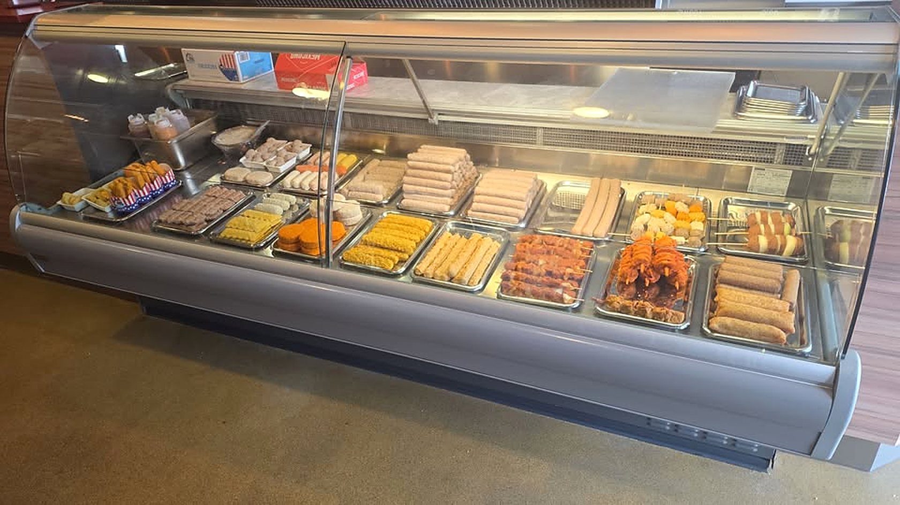

Verse friet, voor je ogen gestampt
Gebakken in ossewit, met ons eigen stoofvlees en huisgemaakte pindasaus. Al sinds 1967 de cafetaria van de Dijklaan in Breda-West: haal het op of app je bestelling vooruit.
De snacks en de friet is van hoge kwaliteit en de eigengemaakte pittige satésaus maakt het af, zo fijn een goeie friettent weer in de wijk.Nicole Frie
Vers en zelfgemaakt
Geen standaard frietje bij ons. Jij ziet zelf hoe we het maken.
Verse friet
De aardappels stampen we vers, gewoon waar je bij staat. Gebakken in ossewit.
Ons stoofvlees
Mals, rijk van smaak en ouderwets huisgemaakt.
Pindasaus
Huisgemaakt, van echte pinda's.
Frikandellensaus
Onze befaamde saus, volgens geheim recept.
Onze drie eigen recepten
Geen dertien-in-een-dozijn-snacks, maar onze eigen creaties, met liefde en passie gemaakt.
Indische ballen
van ManouschkaGehaktballen op Indische wijze, gebakken in de pan met een rijke, kruidige saus. Naar oma's recept, doorgegeven van generatie op generatie. Ook als Indische bal: overgoten met onze pindasaus en krokante uitjes.
Nasiballen
krokant van buitenGevulde rijstballen met kruidig vlees, groenten en een heerlijke Indische smaak.
Bamiballen
boordevol lekkersGevulde bamiballen met bami, kruidig vlees en groenten. Krokant van buiten, boordevol lekkers van binnen.
Op = op
Wil je zeker zijn dat je niet misgrijpt? Reserveer je nasiballen of Indische ballen alvast via WhatsApp.
Drie culturen, één hart, één smaak
Jatialjo is al sinds 1967 de cafetaria aan de Dijklaan. Hollands van huis, Indisch van smaak, Antilliaans van hart: de vertrouwde Hollandse cafetaria als basis, Indisch in de kruiden en Antilliaans in de sfeer.
Waarom kiezen voor één cultuur, als je het mooiste van meerdere werelden kunt samenbrengen? Kom gezellig langs, neem je trek mee en proef het verschil.
"Een mix van culturen, dat ben ik... en dat is Jatialjo!"
Hollands van huis, Indisch van smaak, Antilliaans van hartWat de wijk ervan vindt
100%aanbevolen op Facebook (29)De snacks en de friet is van hoge kwaliteit en de eigengemaakte pittige satésaus maakt het af, zo fijn een goeie friettent weer in de wijk.Nicole Frie
Lekker eten en super vriendelijke mensen!Bas Van Bezouw
Lekker gegeten, goeie stoofvlees ✌🏻Danny Lokhoff
Bestellen of langskomen
App of bel je bestelling door, dan staat hij klaar als je komt.
Cafetaria Jatialjo
Aan de Dijklaan in Breda-West.